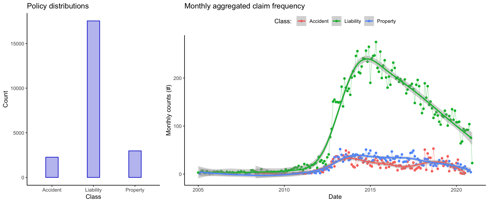
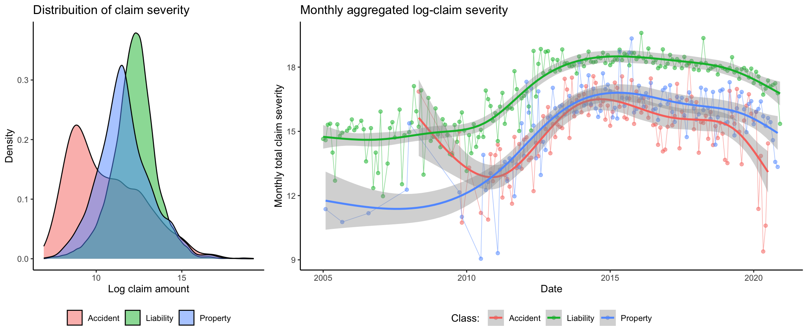
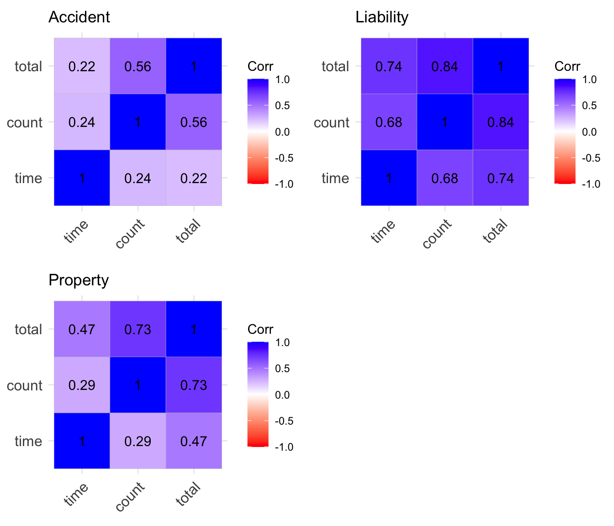

| Class | Reporting date | Claim amount | Settlement date |
|---|---|---|---|
| Property | 2015-10-17 | 188507674 | 2015-11-14 |
| Accident | 2017-10-13 | 47539399 | 2017-10-20 |
| Liability | 2016-02-03 | 217644779 | 2016-02-03 |
| Liability | 2012-08-10 | 128384544 | 2012-08-18 |
| Liability | 2012-05-25 | 124317697 | 2012-05-27 |
| Liability | 2018-04-18 | 87314327 | 2018-06-01 |
Introduction
Insurance companies are financial institutions that mitigates risk by providing protection against potential losses or damages. Policyholders pay regular premiums to an insurance company in exchange for coverage. In the event of a covered incident, they can file claims to receive compensation.
This article will focus on insurance claims experience data, from a portfolio of insurance claims.
In trying to understand a portfolio of insurance claims, we are concerned with two variables: the claims frequency, and claims severity.
Claim frequency: Number of expected or actual claims which occur in a given time period.
Claim severity: This refers to the financial cost of a claim.
The data is obtained with permission from a liability insurance company in Kenya, and a glimpse of the data is shown below:
Claim frequency
In total, we have 23,057 claims. The reporting date ranges from January 2005 to 2020 December. The distribution of policy classes and a smoothed time series of monthly aggregated counts for the various policy types is shown below:

The liability claims take a larger share of the portfolio, followed by property, and accident takes the smallest share of the portfolio. There was a sharp spike in claims frequency during the period mid-2012 in liability claims, and the general trend post 2015 is a declining one in all policy types.
Claim severity
The claim severity distribution for the three insurance classes is shown below. Due to the highly skewed nature of the data (minimum claim: 1030, maximum claim: 21 million), a log transformation is appropriate for visualization clarity.

The accident claims have the lowest average claim amounts, while the liability claims have the highest average amounts. Overall, there is a significant overlap among the claim amounts of the three classes. The data are highly skewed and heavy tailed, with the summary statistics shown below:
| Class | Data | Mean | Variance | Skewness | Kurtosis |
|---|---|---|---|---|---|
| Accident | Severity | 495483 | 5.152381e+12 | 11 | 152 |
| Accident | Log severity | 11 | 4.000000e+00 | 1 | 3 |
| Liability | Severity | 518609 | 8.383795e+12 | 42 | 2417 |
| Liability | Log severity | 12 | 2.000000e+00 | 0 | 4 |
| Property | Severity | 644126 | 2.519351e+13 | 27 | 856 |
| Property | Log severity | 12 | 2.000000e+00 | 0 | 4 |
The liability data has the highest skewness and kurtosis, followed by property and finally accident claims. Property claims have the highest mean and variance among the three classes. The log-transformation has effectively reduced the skewness and kurtosis of the data, making it simpler.
The correlation matrix of the aggregated data are shown below:

There is a high correlation between the claim frequency and severity in liability insurance, as compared to accident and property insurance. There is also a higher correlation between the aggregate claim frequency and time in liability insurance as compared to the rest suggesting that claim frequency in liability insurance has been increasing with time.
Modelling
We aim to model the aggregated frequency at the monthly level and the aggregated claim severity at the monthly level. Typical analyses often seperate the modelling of frequency from severity, however in this analysis, we aim to use multi-variate modelling to model both simultaneously.
Since the claim frequencies are count data, then an appropriate statistical distribution should have the poperty that: it is a discrete distribution, has positive skewness. Such distributions include count distributions such as the Poisson distribution and the negative binomial distribution.
For claim severity modelling, the distributions appropriate for analysis are those which: have high skewness, support is the positive real line, have heavy tails. Examples of distributions for such include: Log-normal distribution, Pareto distribution and other heavy tailed distributions such as the Burr distribution.
For a start, we fit a multivariate model on the data, where the claim frequency is modelled as a poisson random variable, while the log-claim severity is modelled as a normal random variable. The model fitted is an intercept only model.